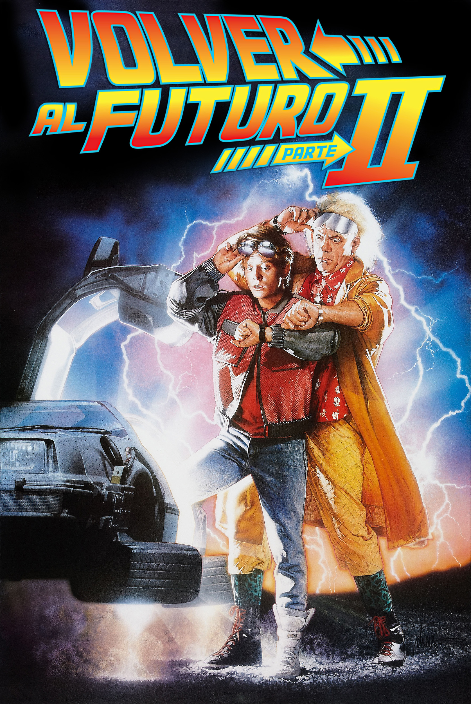

Mis pelis favoritas
Aquí listo mis películas favoritas
Mis series Preferidas
Acá enumero mis series favoritas
Ciencia Ficción es lo más
La ciencia ficción es un género que en encanta porque permite imaginarse mundos nuevos, tanto distópicos como utópicos. Permite divagar y conjeturar acerca de los avances de la tecnología a futuro. Una saga de películas del genero ficción que me ha marcado a mí, y asumo que a muchos de ustedes también, es volver al futuro. En la primera entrega de la saga, mi favorita, hacemos un viaje al pasado, con tecnologías que ya conocemos o podemos saber de su existencia, pero en la segunda película se va hacia el futuro, más precisamente al 2015 . El director se imaginó muchos cambios tecnológicos que en realidad no sucedieron para esa época, pero otros sí.

Datos de mis series favoritas
| Nombre | Plataforma | Temporadas | Cantidad de Espisodios | Actores Principales | Año de aparición |
|---|---|---|---|---|---|
| Cobra Kai | Netflix | 3 | 30 | Ralph Macchio William Zabka |
2018 |
| Sabrina | No se emite más | 7 | 163 | Melissa Joan Hart Nick Bakay |
1996 |